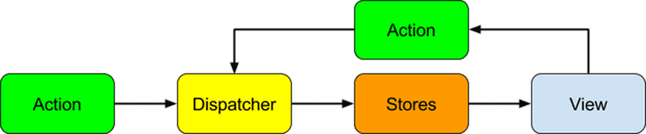

unboxing
@ngrx/store
What is RxJS?
With rxjs, everything is a stream.
Here's an example
What is Redux?
It's an implementation of Flux
Flux
An application architecture
@ngrx/store
Action
import { Action } from '@ngrx/store';
import { SomeThing } from '../models';
export const ADD_SOME_THING = '[SomeThing] Add';
export class AddSomeThingAction implements Action {
readonly type = ADD_SOME_THING;
constructor(public payload: SomeThing) { }
}
Dispatcher
@Component({
selector: 'some-thing-page',
template: 'some-thing.html'
export class CollectionPageComponent {
someThing: Observable;
constructor(store: Store) {
this.someThing = store.dispatch(
new AddSomeThingAction(
models.SomeThing.Create()));
}
}
Store
export interface State {
ids: string[];
entities: { [id: string]: SomeThing };
};
export const initialState: State = {
ids: [],
entities: {},
};
state
Store
export function reducer(state = initialState, action: Actions): State {
switch (action.type) {
case ADD_SOME_THING: {
//build new state
}
default: {
return state;
}
}
}
reducer
Store
const items = [action.payload].filter(thing => {
return !state.entities[thing.id]
});
const ids = items.map(q => q.id);
const newEntities = [action.payload].reduce(
(entities: { [id: string]: Thing }, thing: Thing) => {
return Object.assign(entities, {
[thing.id]: thing
});
}, {});
immutable state
Store
return {
ids: [...state.ids, ...ids],
entities: Object.assign({}, state.entities, newEntities),
}
reducers return new state
Store
export const getThingsState = (state: State) => {
return state.things;
};
export const getSelectedThing =
createSelector(getThingState, fromThings.getSelected);
selectors
Store
const reducers = {
things: fromThings.reducer,
otherThings: fromOther.reducer
};
const mainReducer: ActionReducer = combineReducers(reducers);
export function reducer(state: any, action: any) {
return mainReducer(state, action);
}
combining reducers
Store
import { StoreModule } from '@ngrx/store';
import { reducer } from '../reducers'
@NgModule({
declarations: [],
imports: [
StoreModule.provideStore(reducer),
],
bootstrap: [],
entryComponents: [],
providers: []
})
configuration
State management strategies
ids: [1, 2, 3],
entities: {
1: {id: 1, name='one'},
2: {id: 2, name='two'},
3: {id: 3, name='three'},
}
Questions
Remember, I'm a @ngrx/store noob.